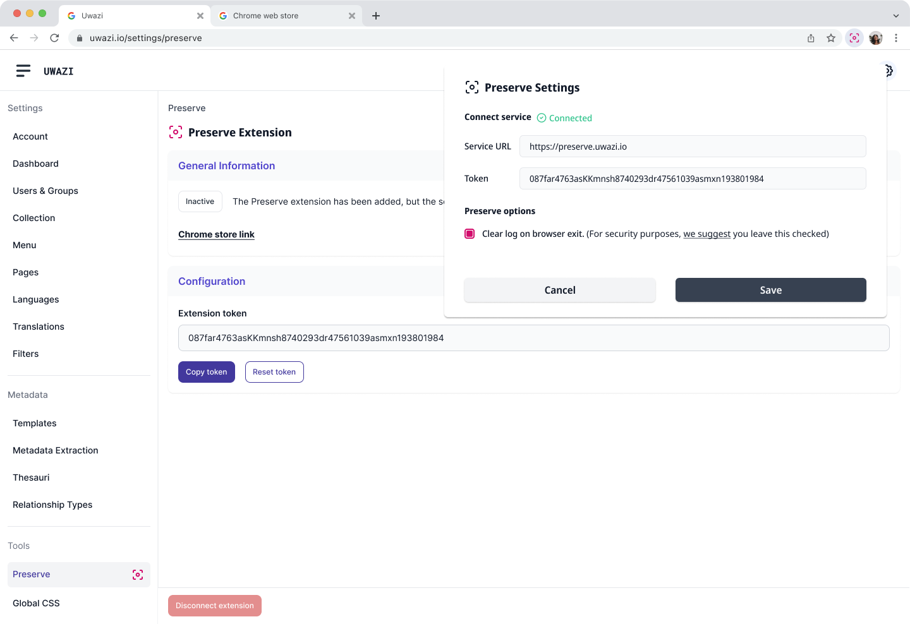
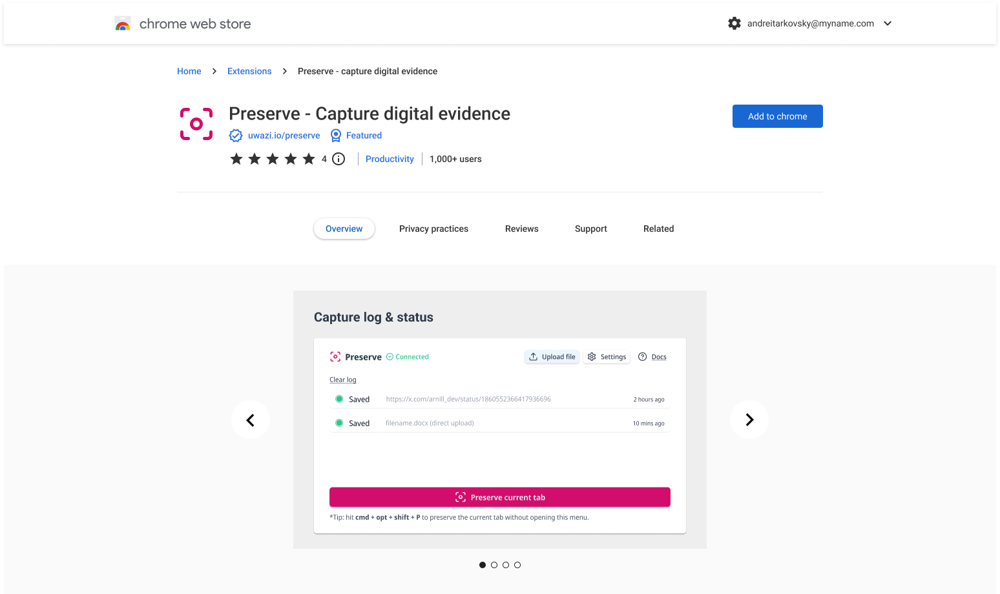
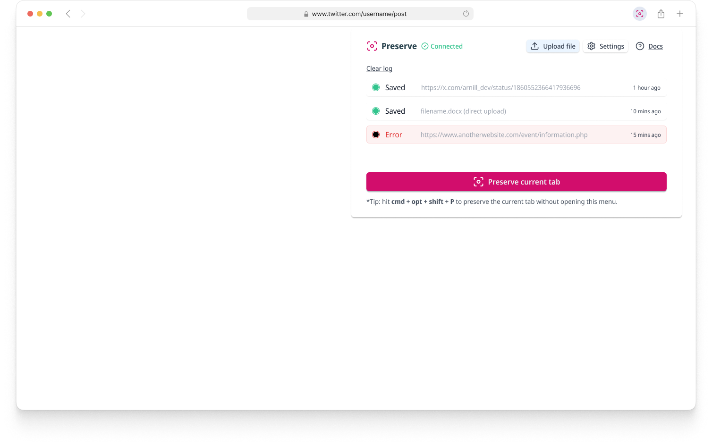

Preserve: Evidence Collection for the Web
Designed a browser extension integrated with Uwazi that captures tamper-proof evidence from web content, social media posts, and online articles for legal proceedings. Solved the unique UX challenge of creating seamless evidence collection workflows within browser constraints, ensuring captured content maintains legal integrity while remaining user-friendly for human rights investigators and legal professionals.
Role
Lead UX/UI Designer
Team
PM, 3 Engineers
Timeline
1 month (Alpha development) + 2 months (V1 design)
Tools
MindNode, Figma, Browser DevTools
The Challenge
Legal professionals and human rights investigators needed a reliable way to capture online evidence that would be admissible in court, with seamless integration into their existing Uwazi documentation workflows. Traditional screenshot methods and manual documentation lacked the cryptographic verification required for legal proceedings, while existing tools were either too technical for non-technical users or failed to provide the tamper-proof guarantees that legal contexts demand.
The challenge was designing an evidence collection workflow that operated seamlessly within browser environments while maintaining direct integration with Uwazi's documentation platform. Users needed to capture not just visual content, but also metadata, timestamps, and source verification—all while working within the constraints of browser extension architecture and ensuring captured evidence automatically synced with their ongoing human rights cases.
Information architecture diagram showing the flow of the Preserve extension.
Process & Research
We worked closely with legal experts and human rights investigators to understand the specific requirements for admissible digital evidence. This involved studying legal precedents, understanding chain-of-custody requirements, and identifying the most common types of online content that require preservation.
- Legal Requirements: Studied evidence admissibility standards and tamper-proof verification needs.
- User Workflows: Mapped how investigators currently collect and document online evidence.
- Technical Constraints: Explored browser extension limitations and security considerations.
- Content Types: Analyzed various online content formats requiring preservation.
Full presentation of the V1 flow and design, and MVP.
Ideation & Design
The extension design prioritized simplicity and reliability, enabling users to capture evidence with minimal technical knowledge while ensuring maximum legal integrity. The interface focused on clear visual feedback and straightforward interactions that work consistently across different websites and content types.
Key Features:
- One-Click Capture: Simple interface for capturing web pages, posts, and multimedia content.
- Uwazi Integration:Direct sync with existing Uwazi documentation workflows and case management.
- Cryptographic Verification: Automatic generation of tamper-proof certificates and metadata.
- Chain of Custody: Built-in documentation for legal trail requirements.
- Cross-Platform Compatibility: Consistent experience across different browsers and websites.
Preserve extension full flow mockup.
Preserve setup with a generated token, between Uwazi and the browser extension.

Capture status indicators showing success or failure within the extension.
The Solution & Impact
This project demonstrated the importance of designing for specialized, high-stakes use cases where user experience must balance simplicity with technical precision. Working within browser extension constraints while meeting legal requirements provided unique insights into designing for regulated industries and mission-critical applications.
The alpha validation confirmed that thoughtful UX design can make complex legal-technical requirements accessible to non-technical users, opening new possibilities for digital evidence collection in human rights work and legal proceedings.
Chrome Web Store listing for the Preserve extension.
Integration with Uwazi, showing how the extension captures evidence and syncs with the platform.
Preserve extension Safari UI mockup.
Current Status & Next Steps
The alpha version successfully validates the core concept and technical feasibility of tamper-proof evidence collection within browser environments. User feedback from legal professionals and investigators has been positive, confirming the product-market fit and identifying key areas for enhancement.
V1 designs:
- Enhanced user interface with improved visual hierarchy and clearer workflows
- Capture status indicators to provide clear feedback when evidence collection fails or encounters issues
- Expanded content type support including social media stories and dynamic content
- Advanced organization tools for managing large evidence collections
- Integration capabilities with legal case management systems
- Improved export options for various legal documentation formats
The v1 release will transform Preserve from a proof-of-concept tool into a production-ready platform that legal professionals can confidently integrate into their evidence collection workflows.
Huridocs | 2021-2025